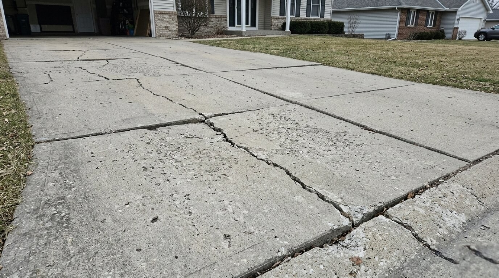

How to Know When Your Concrete Driveway Actually Needs Replacing vs. Repair
Cracks, settling, and spalling all look alarming — but only some of them actually warrant a full replacement. Here's how McHenry County homeowners can tell the difference and what to expect from each option.

The Short Answer
Concrete driveways in Illinois take a serious beating. Freeze-thaw cycles, clay soil movement, road salt runoff, and decades of vehicle traffic combine to create cracks, surface deterioration, and in some cases, structural failure. The challenge is knowing which problems are cosmetic and which ones signal that the slab itself is done.
The good news: most surface issues are repairable and extend the life of an otherwise solid driveway by 5–10 years. The bad news: many homeowners spend money on repairs when replacement would have been the smarter long-term investment.
Signs You Can Repair
Hairline surface cracks (under ¼ inch wide)
Small cracks that run along the surface and don't extend all the way through the slab are typically cosmetic. These usually form from concrete shrinkage during the curing process, seasonal temperature changes, or minor surface scaling. A quality polyurethane or epoxy filler can seal them and prevent water infiltration that leads to further damage.
Minor surface scaling or spalling
Surface spalling — where the top layer of concrete flakes or pops off — is common in Illinois driveways exposed to road salt and de-icers. If the spalling is confined to the surface layer and the underlying concrete is solid, resurfacing is a viable option. This applies when less than 20–25% of the total surface area is affected.
Single isolated section damage
If one panel or section has sustained damage while the rest of the driveway is in good shape, cutting out and replacing just that section is often a cost-effective solution. This works best for driveways with clear expansion joints that allow clean cuts.
Rule of thumb: If the repair cost exceeds 30–40% of what a full replacement would cost, do the replacement. You get a fresh surface, a proper warranty, and no more patchwork appearance.
Signs You Need Full Replacement
Cracks wider than ½ inch
Wide cracks, especially those with vertical displacement (where one side is higher than the other), indicate that the base beneath the slab has failed. Filling these cracks is a temporary fix — the underlying movement will cause the filler to fail and the crack to return, often worse, within one to two seasons.
Multiple large cracks in a network pattern
A "map cracking" or "alligator cracking" pattern — where interconnected cracks form across a wide area — signals that the slab has lost structural integrity throughout. This can't be patched; the concrete has effectively failed and needs to come out.
Sunken or heaved sections
If sections of your driveway have settled significantly below the surrounding surface, or if frost heave has pushed sections up, the base is compromised. In Illinois, this is especially common in areas with clay-heavy soil that expands and contracts dramatically with moisture changes. Mudjacking can sometimes address settling, but it's only appropriate when the concrete itself is still intact.
Driveway is 30+ years old
Even well-maintained concrete driveways have a finite lifespan. If your driveway is approaching or past 30 years and is showing multiple issues, a full replacement makes more financial sense than continuing to invest in repairs on an aging slab. Modern installation practices — including proper base preparation, reinforcement, and control joint placement — mean a new driveway will significantly outlast a repaired old one.
Drainage problems
A driveway that pools water, directs runoff toward the foundation, or has lost its slope due to settling isn't just a nuisance — it's actively damaging your property. Drainage corrections almost always require full removal and reinstallation with proper grading.
Not Sure What You're Looking At?
We offer free on-site assessments across McHenry County. We'll give you an honest opinion — repair or replace — and a written quote either way.
Schedule a Free Assessment →The Cost Reality in McHenry County
Concrete driveway repair costs in the Crystal Lake and McHenry County area typically run $3–$8 per square foot depending on the type and extent of damage. A full replacement runs $6–$12 per square foot for a standard broom-finish concrete driveway, depending on size, demolition requirements, and site conditions.
When you factor in that repairs on a structurally compromised slab often need to be repeated every 2–3 years, the math often favors replacement — especially when you factor in the curb appeal and property value a fresh driveway provides.
What to Ask Before Deciding
- How old is the current driveway?
- Are the cracks getting wider or longer over time?
- Is there vertical displacement at the cracks?
- How much of the total surface is damaged?
- Has the drainage always been adequate?
- What's my 5–10 year plan for this property?
If you're planning to stay in the home long-term, a replacement driveway is almost always the better investment. If you're selling in the next 1–2 years, selective repairs to address the most visible damage may be a more practical approach.